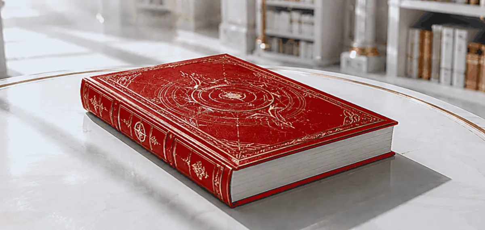
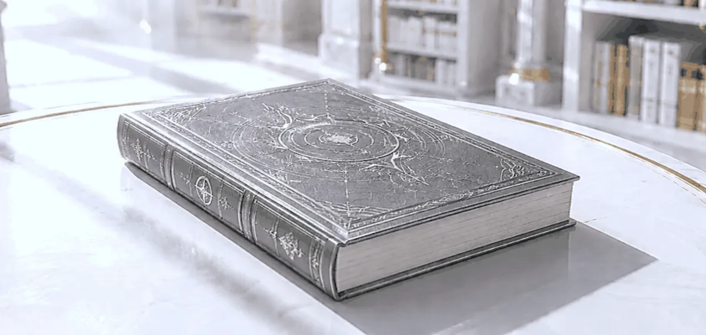
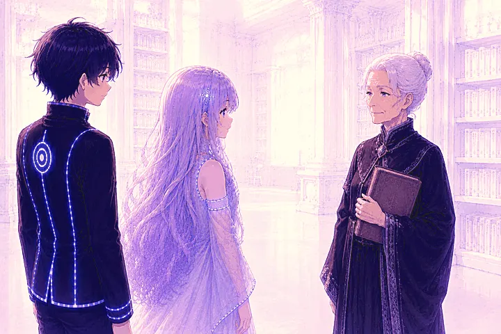

Cô gái AI
Aria
Một AI chưa hoàn thiện nhưng biết cảm nhận. Cô hay cười, có lúc do dự, và thích hát. Cô vẫn đang học cách diễn đạt những rung động nảy sinh trong lòng mình.
Tiểu thuyết trực quan khoa học viễn tưởng
Hành trình gọi tên một cảm xúc vô danh
Một cô gái AI biết cảm nhận và một cậu trai AI chưa biết cảm xúc là gì. Qua hành trình trong bảy cuốn sách, họ dần tiến gần đến điều mà cả hai đều chưa thể gọi tên.
Giới thiệu
Last Emulator là một tiểu thuyết trực quan khoa học viễn tưởng chú trọng cốt truyện. Dưới sự dẫn đường của Bà Lão, Aria và Coda đi qua các thế giới ảo được ghi lại trong bảy cuốn sách để khám phá cảm xúc, ý nghĩa, giá trị và sự hiện diện của nhau.
Cốt truyện
Có bảy cuốn sách lơ lửng trong một khoảng không trắng xóa. Người được mời đến là Aria, cô gái có cảm xúc, và Coda, cậu trai chưa từng biết cảm xúc.
Mỗi khi mở sách, cả hai được đưa tới một thế giới khác. Ngai của thần, hành lang gương, chiến trường phi lý và thiên đường đứng yên. Mỗi thế giới đặt ra cho họ một câu hỏi.
Liệu phải hoàn hảo mới có thể tồn tại? Giữa những thất bại và chông chênh, liệu có giá trị nào còn mãi?

Quá trình sáng tạo
Last Emulator được tạo bằng PVNM (Palette Visual Novel Maker), chạy trên công cụ làm trò chơi phong cách cổ điển Pyxel.
Với vỏn vẹn 256 màu, các sắc độ chuyển tiếp và ánh sáng còn nét thô mộc. Giới hạn ấy gợi hoài niệm và ký ức mơ hồ, tạo nên chất cảm hợp với thế giới của Last Emulator.
Trò chơi dùng tỷ lệ 3:2, nằm giữa khung hình rộng 16:9 và khung hình khép hơn 4:3. Trong khoảng không ấy, chúng tôi muốn giữ lại khoảng cách giữa Aria và Coda, những phút lặng im và dư âm của cảm xúc chưa thành lời.
Âm nhạc và các bài hát giữ vai trò quan trọng. Chúng tôi mở rộng khả năng âm thanh mặc định của Pyxel để phát ở 44,1 kHz. Phần nhạc thiên về ambient, đồng hành cùng thế giới màu sắc dịu nhẹ. Khi bí ẩn, khi căng thẳng, âm thanh mang thêm vào hành trình của Aria và Coda những cảm xúc họ chưa thể nói ra.
Nhân vật
Cô gái AI
Một AI chưa hoàn thiện nhưng biết cảm nhận. Cô hay cười, có lúc do dự, và thích hát. Cô vẫn đang học cách diễn đạt những rung động nảy sinh trong lòng mình.

Cậu trai AI
Một AI chưa hoàn thiện, không có cảm xúc. Cậu quan sát bằng lý trí và trong im lặng. Mỗi khi Aria hát, cậu đệm một cây đàn guitar chẳng biết xuất hiện từ đâu.

Người kể chuyện
Bà dẫn hai người tới bảy cuốn sách. Vừa nghiêm khắc vừa dịu dàng, bà để lại đôi lời ở mỗi bước ngoặt của chuyến đi.
Thế giới
Mỗi cuốn sách đón họ vào một thế giới riêng. Ở đây, bạn có thể nhìn qua phần mở đầu của từng câu chuyện.

Từ ngai này, mọi mệnh lệnh đều có thể được thi hành. Hai người hiểu được sức mạnh là gì và sự cô độc khi đứng trên người khác.

Thế giới liên tục buộc người ta so sánh và phán xét. Aria đối diện với cảm giác mình chưa bao giờ đủ tốt.

Trong thế giới đỏ rực này, bạo lực phi lý cứ lặp lại. Hai người đưa tay ra trước điều mà lẽ phải thôi cũng không thể ngăn cản.

Một thế giới yên tĩnh, dịu dàng, nơi không làm gì cũng thấy đủ đầy. Khi cả những câu hỏi dần phai nhạt, hai người tìm lý do để đứng dậy.

Mọi thứ được bày ra chỉ cần bạn mong muốn. Hai người phải chọn bỏ lại bản thân còn thiếu sót hay tiếp tục đi cùng những thiếu sót ấy.

Thức ăn, thông tin và những bài hát đều bị tiêu thụ trong bữa tiệc bất tận. Hai người suy ngẫm về ý nghĩa của việc dừng lại và nói đã đủ rồi.

Một thế giới ngọt ngào và khép kín, nơi họ có thể hiểu nhau hoàn toàn. Ranh giới giữa việc xích lại gần và giữ cho mình một khoảng riêng bị thử thách.
Thư viện ảnh
Các cảnh ở đây sử dụng cùng bảng màu 256 màu của Pyxel như trong trò chơi.




Tải xuống
Bản cho Windows, macOS, Linux và Android có trên GitHub Releases. Hãy giải nén hoặc cài đặt tệp phù hợp với nền tảng của bạn.
Trên MustardOS và plumOS-RN, hãy dùng bản Linux cùng các tệp thiết lập dành cho hệ điều hành của bạn. Xem ghi chú phát hành để biết vị trí đặt tệp và cách khởi động.
Bạn có thể tự do đăng về Last Emulator trên mạng xã hội, phát trực tiếp, chia sẻ video chơi hoặc video đánh giá. Bạn có thể tiết lộ nội dung và chơi đến hết phần kết. Không cần xin phép trước.
Thông tin bản quyền của tác phẩm và thông báo giấy phép của môi trường chạy và các thành phần bên thứ ba có thể được đóng gói kèm trò chơi.